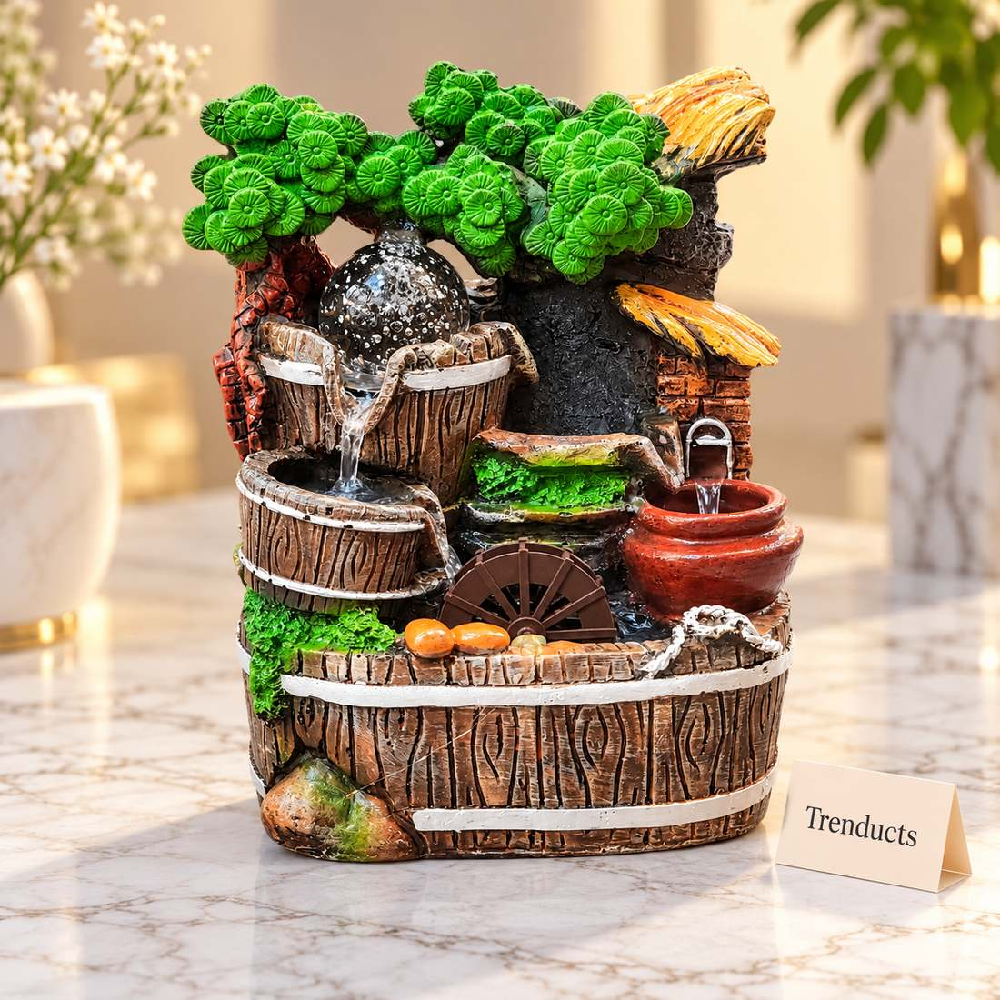
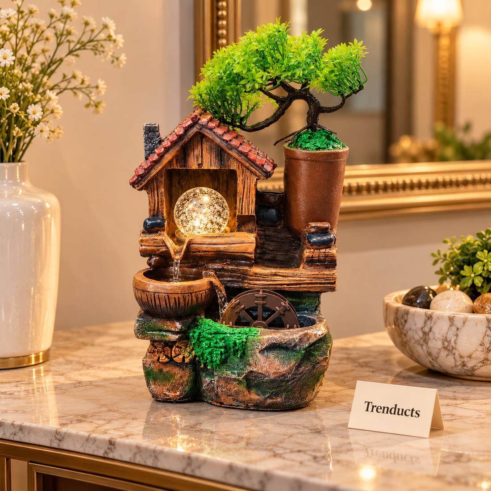

Pakistani homes are rarely quiet. There is traffic outside, a pressure cooker whistling in the kitchen, children doing homework to the sound of cartoons, and a television that seems to be always on. Many people are looking for small ways to create a calmer space. A tabletop water fountain is one of them: the gentle sound of moving water softens background noise and gives the eye something peaceful to rest on.
Why the sound of water feels calming
Many people find steady, natural sounds like rain or running water relaxing, and they are often used in meditation and sleep recordings. A small fountain produces a soft, constant sound that can mask sudden noises from outside. It will not replace good sleep habits or quiet, but it can make a reading corner, prayer area or office desk feel more peaceful.
What a tabletop fountain is
Most indoor fountains are compact pieces made of resin, ceramic or stone with a small electric pump hidden inside. The pump lifts water from a basin to the top, and it trickles down over rocks, tiers or a little waterwheel. Many include an LED light that makes the water sparkle at night. They need a plug point, a little water and occasional cleaning.
Where to place it
- A side table in the drawing room, where guests notice it but it is out of walking paths
- A study desk or home office, as a small visual break from the screen
- The entrance, to create a welcoming first impression
- A bedroom corner, if the sound is soft enough not to disturb sleep

Avoid placing fountains on wooden furniture without a tray underneath, as splashes can mark the wood. Keep them away from direct sunlight, which encourages algae, and away from electronics.
Feng shui and personal taste
Some people place fountains according to feng shui, which links flowing water with good fortune and suggests putting it near the entrance. Whether or not you follow these ideas, choose a design that matches your room. Rock and bonsai styles suit natural, earthy interiors. Tiered leaf designs look softer and more decorative.
Keeping water clean
The most common problem with indoor fountains is dirty water and a musty smell. A simple routine prevents it:
- Use filtered or boiled and cooled water, which leaves less white residue than hard tap water
- Top up every few days, as water evaporates faster in summer and with fans running
- Never let the pump run dry, as this can burn it out
- Empty and clean the basin every two weeks with a soft brush and mild soap
- Rinse the pump intake, where hair and dust collect
Hard water in many Pakistani cities leaves white scale. A little vinegar in water, followed by a thorough rinse, removes it.
Electricity and safety
Keep the cable tidy and away from where people walk. Unplug the fountain before cleaning or refilling. If you have load-shedding, the pump will simply stop and restart when power returns; check the water level after long outages. Keep fountains out of reach of small children, who are fascinated by water.

Noise level
Some fountains are louder than others. A strong trickle can be relaxing in a living room but distracting in a bedroom. Many pumps have an adjustable flow; turn it down for a softer sound.
Humidity and plants
A small fountain adds a little moisture to the air, which some people like during dry winters. It will not replace a humidifier, though. Placing a few small plants around it creates a lovely green corner.
Choosing your fountain
Think about the space, the sound you want and how much care you are ready to give. To compare styles, you can look through these indoor tabletop fountains, from bonsai and rock cascades to tiered leaf designs. Trenducts delivers across Pakistan, so you can bring a calm corner to your home wherever you live.
A tabletop fountain will not quiet the whole city, but it can give you one small, peaceful spot to return to every day.